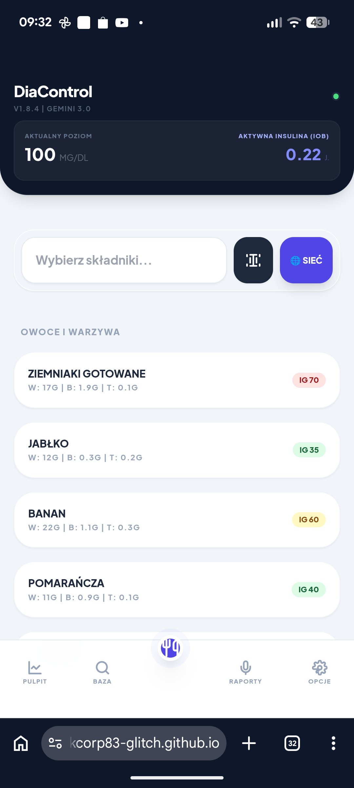
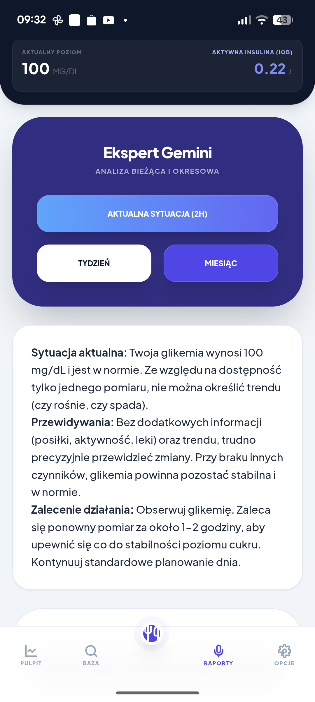

v1.8.4 Integracja z Gemini 3.0
Ulepszone algorytmy bolusa i pełne wsparcie dla najnowszego modelu AI Gemini.
Inteligentny kalkulator bolusa, synchronizacja z Nightscout i zaawansowane raporty AI Gemini – w jednej, darmowej aplikacji na Twój telefon.
Cześć! GlikoControl to mój projekt hobbystyczny. Aplikacja ma ułatwiać codzienne obliczenia, ale pamiętaj – nie zastępuje porady lekarza.
Wszystko, czego potrzebujesz, aby podejmować pewne decyzje i utrzymać glikemię w normie.

Błyskawiczne podliczanie węglowodanów, białek i tłuszczy. Aplikacja prezentuje gotowe wartości Wymienników (WW i WBT).
Obszerna baza z automatycznie przypisanym Indeksem Glikemicznym. Kolorowe oznaczenia pomagają w szybkim wyborze posiłku.


Analiza pomiarów, trendów i posiłków w czasie rzeczywistym. Otrzymuj inteligentne wskazówki oparte na Twoich danych.
Dodaj GlikoControl do ekranu głównego prosto z przeglądarki.
Użyj Chrome (Android) lub Safari (iOS).
Kliknij trzy kropki (Chrome) lub ikonę udostępniania (Safari).
Wybierz "Dodaj do ekranu głównego".
Ulepszone algorytmy bolusa i pełne wsparcie dla najnowszego modelu AI Gemini.